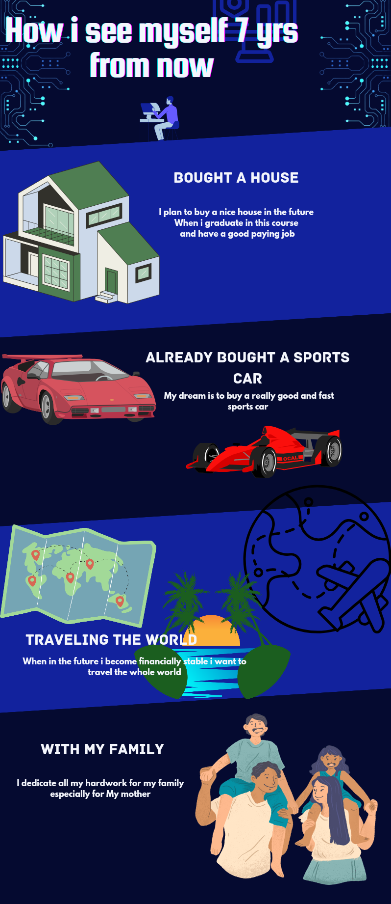

Hello! I'm Francis Kyle Arranchado,19 yrs old, that lives in Purok 8 Barangay 9, Malaybalay City Bukidnon. currently taking Bachelor of Science in Information Technology at Bukidnon State University. I enjoy playing games, cycling with my friends, and taking my dog to a walk. In senior high, we were trained to take the NC2 exam, but for some reasons, we haven't taken it yet, and thus, the NC2 certificate is not in our hands.
Skills
Hobbies

Follow me at